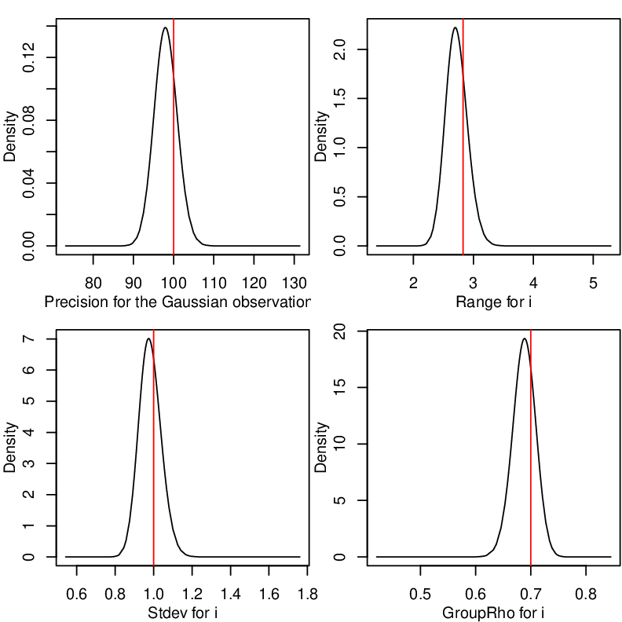
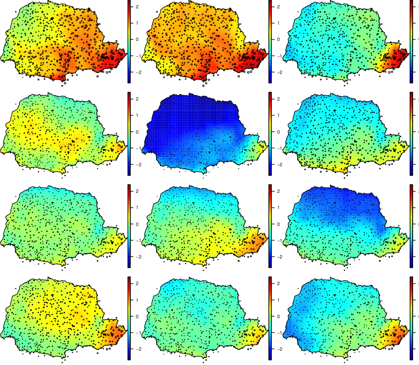

Figure 13.2: Mesh used to inference for the log-Cox process.
The R source for the three examples in this Chapter is available at http://www.math.ntnu.no/inla/r-_inla.org/tutorials/spde/R/spde-_tutorial-_prefsampl.R
Under the log-Cox model assumption, there is a latent Gaussian Random Field (LGRF) and the inference can be done using INLA, [Møller et al., 1998]. A common aproach to fit the log-Cox process is to divide the study region into cells, that forms a lattice, and count the number of points into each one, [Møller and Waagepetersen, 2003]. One can consider this counts and a Poisson likelihood conditional to a LGRF and use INLA to fit the model, [Illian et al., 2012].
An approach considering the SPDE approach was considerd in [Simpson et al., 2016]. This approach has a nice theoretical justification and considers a direct approximation of the log-Cox point process model likelihood. The data is modeled considering its exact location instead of binning it into cells. Along with the flexibility for defining a mesh, it can handle non-rectangular areas avoiding to waste computational effort.
We will use the data simulated here later in Section 13.1 and in Section 13.2. To sample from a log-Cox point process we will use the rLGCP() function from the spatstat R package. By default that function do simulation on window over the (0,1) × (0,1) square. We choose to do simulation over the (0,3) × (0,3) square.
This function uses the GaussRF() function from the RandomFields package. The rLGCP uses the GaussRF() function to do simulation of the LGRF over a grid on the provided window and use it to do the point process simulation.
There is an internal parameter to control the resolution of the grid. We change it to
First we define the model parameter for the model is the mean of the LGRF. This is directly related to expected number of points of the spatial pattern. The expected number of points is its exponential times the area fo the window. We use
So, the expected number of points is
Is also possible to use a functional, see Shapter 13.1.
In the estimation process we use the Matern covariance function with ν = 1. So, here we just fix it on this value. The other parameters are the variance and scale
Doing the simulation
Both the LGRF and the point pattern are returned. We collect the point pattern locations coordinates with
and the number of points is
The exponential of simulated values of the LGRF are returned as the Lambda attribute of the object. We extract the Λ and see a summary of the log(Λ) below
We can see the simulated LGRF over the grid and the point pattern simulated in Figure 13.0.1 produced with the following commands
Following [Simpson et al., 2016] we can estimate the parameters of the log-Cox point process model using few command lines.
To do inference for the log-Cox point process model we also need some care on building the mesh and on using it.
To do inference for the log Cox process, it is not necessarly better to have any location points as any of the mesh nodes, as on the geostatistical analysis where it helps a bit for the estimation of the nugget effect, see 2.5. We just need a mesh that covers the study region. So, we use the loc.domain argument to build the mesh.
An additional thing is that we ignore the second outer extension and we use a small first outer extension. This is because it is not necessary to have nodes out of the study region when it recieves zero weights (see weight computation below).
which is visualized at Figure 13.0.2 with following commands
Defining the SPDE model considering the PC-prior derived in [Fuglstad et al., 2017] for the
model parameters as the practical range,  ∕κ, and the marginal standard deviation.
∕κ, and the marginal standard deviation.
The SPDE approach defines the model on the nodes of the mesh. To fit the the log-Cox point process model these points are considered the integration points. The method in [Simpson et al., 2016] defines the expected number of events to be proportional to the polygons volume of the dual mesh. It means that at the node on the mesh with has the larger edges we have larger expected value. The diag(spde$param.inla$M0) gives this value for every mesh node. However, the mesh has nodes out of the domain implying
to be larger than the domain area.
We can use these values for the nodes on the inner domain and compute the intersection between the dual mesh polygons and the study domain polygon. To do that we have the function inla.mesh.dual(), available in http://www.math.ntnu.no/inla/r-_inla.org/tutorials/spde/R/spde-_tutorial-_functions.R This function considers a mesh and return the dual mesh in the SpatialPolygons class.
We can see it in Figure 13.0.2.
We can convert the domain polygon into a SpatialPolygons class with
Them, we can have the intersection with each polygon from the mesh dual using the functions gIntersection() from the rgeos package
And we chan check that there are integration points with zero weight.
These are identified in red in Figure 13.0.2.
This vector is just what we need to use as the exposure (expected) for the Poisson likelihood and is related to the augumented data that we need to fit using the Poisson likelihood. We can specify that the first observations (number of nodes) are zero and the last are ones (number of events).
So, the expected vector can be defined by
We must have to define the projector matrix to do inference using the SPDE approach, [Lindgren, 2012]. For the observed points locations we have
We need also a projector matrix for the integration points and this is just a diagonal matrix because this locations are just the mesh vertices.
So, the entire projector matrix is
The data stack can be made by
The posterior marginals for the parameters are obtained with
We can see the summary for the practical range and standard deviation of the lateng Gaussian random field with
The posterior distribution of the log-Cox model parameters are visualized on the Figure 13.0.2.

In the previous example we have done simulation considering the underline intensity as just the exponential of a realization of a Gaussian random field. In this chapter we consider that we have an additional effect, which is treated as a covariate. In order to fit the model, it is needed the covariate value everywhere, at the location points and at the integration points.
The simulation is done considering that the covariate effect is available at the same grid points where the Gaussian process is simulated. So, first we create an artificial covariate at the grid
Now, the expected number of points is function of the covariate
Doing the simulation
Both, the LGRF and the point pattern, are returned. The point pattern locations are
We can see the covariate values and the simulated LGRF over the grid in Figure 13.1.1 with the following commands

We have to include the covariate values to do the inference. We need to collect it at the point pattern locations and at the mesh nodes from the grid.
We collect the covariate with the command below
The augumented response data is created in same way as before.
The projector matrix for the observed points locations
The entire projector matrix, using the previous for the integration points, is
The data stack is
The model is fitted by
Summary of the model parameters
The posterior distribution of the log-Cox model parameters are visualized on the Figure 13.1.2.

In some cases the effort on sampling depends on the response. For example, is more common to have stations collecting data about pollution on industrial area than on rural ones. To make inference in this case, we can test if we have a preferential sampling problem in our data. One approach is to build a joint model considering a log-Cox model for the point pattern (the locations) and the response, [Diggle et al., 2010]. So, we need also to make inference for a point process model jointly.
This approach assumes a linear predictor for the point process as
and for the observations a linear predictor which is function of the latent Gaussian random field for the point process

where β0y is an intercept for the observations and β is a sharing parameter.
An illustration of the use INLA for the preferential sampling problem is on the case studies section of the INLA web page, precisely on http://www.r-_inla.org/examples/case-_studies/diggle09. This example uses the two dimentional random walk model for the latent random field. Here, we show geoestatistical inference under preferencial sampling using SPDE.
We now will use the values of the latent GRF considered in the simulation of the point process to define an outcome at the location points. We just take the values of closest grid centers to each location of the point pattern. The values of the LGRF is collected (and a summary) at closest grid centers with
These values are the latent field with zero mean plus the defined intercept. We define the response as a different intercept βy and multiply the zero mean random field with a 1∕β, where β is the parameter as the sharing parameter between the intensity of the point process locations and the response.
Considering β < 0, it means that the response values is inversly proportional to the point process density.
Here, we just fit the geoestatistical model using the usual approach. In this approach we just use the locations as fixed. We use the mesh of the previous Chapter.
We can see the posterior distribution marginals for the model parameters in the Figure 13.2.1, produced with the following code
In this situation we fit the model where a LGRF is considered to model both point pattern and the response. Using INLA it can be done using two likelihoods, one for the point pattern and another for the response. To do it we need a matrix response and a new index set to specify the model for the LGRF. It is more easy by using the inla.stack() following previous examples for two likelihood models.
We consider the point pattern ’observation’ on the first column and the response values on the second column. So, we just redefine the stack for the response and also for the point process. We put the response on the first column and the Poisson data for the point process as the second column. Also, to avoid the expected number of cases as NA for the Poisson likelihood, we set it as zero on the response data stack. For the SPDE effect on the point process part we have to model it as a copy of the SPDE effect at response part. We do it by defining a index set with different name and use it on the copy feature later.
Now, we fit the geostatistical model under preferential sampling. To put the LGRF on both likelihood, we have to use the copy strategy.
We can visualize the posterior marginal distributions for the model parameters from the result considering only the point process (PP), only the observations/marks (Y) and jointly in Figure 13.2.2. Notice that for the β0 parameter we only have results considering only the PP and joint, for βoy we only have results considering only Y and joint, and for β (fitted using copy) we only have result from the joint model. Only for the random field parameters we do have results from the three results.

 ∕κ, the marginal standard deviation for the random field σx2
and the sharing coefficient β.
∕κ, the marginal standard deviation for the random field σx2
and the sharing coefficient β.